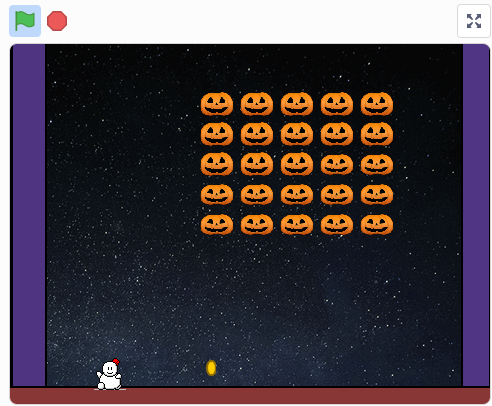
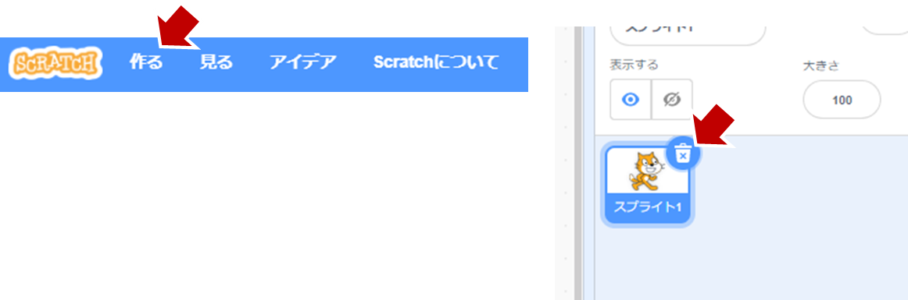
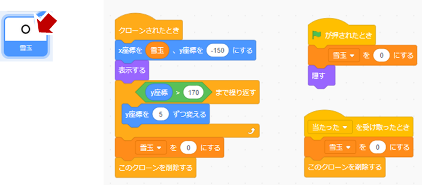

開催報告
Scratchお題『ハロウィーン・ベーダー』
Scratchプログラミング初心者向けの教材。繰り返し作業の定義とスプライトのプロパティを 活用したオブジェクト指向的な考え方を学ぶ。

体験できること
■ [定義]ブロックを使って、同じ事を繰り返す作業を楽にする。
■ [オブジェクト指向]：スプライト１個ずつ（それ自体）が、決められた動作をしたり、判断したりする。
プログラミングの流れ
素材はこちら（https://coderdojoome.github.io/dl/oct.zip）。
１．画像ファイル(png)３個から、かぼちゃのスプライト１個を作る。そんで、アニメーションする（画像は３つあるけど、２個だけ交互に繰り返す）。
２．完成したアニメを縦横５ｘ５ずつに並べる。
３．「メッセージ」を使って、「全員～、進め」（といっても左右に）を号令する。全員動く。
４．画面の端まで移動したら、逆方向に進む（できれば、その時、一歩、画面したへ前進する）。
５．がぼちゃたちが左右に移動できたら前半は成功。新しくスプライトを用意し、ダウンロードした(splite3)ファイルをスプライトに読み込む。キー操作［←］［→］で動かしてみよう。
６．ここから改造して本格的なゲームを作る。
ステップ１．ジャックオーランターン（かぼちゃ）のアニメを作る
素材をダウンロードする（https://coderdojoome.github.io/dl/oct.zip）
Zipファイルを解凍して４つのファイルを確認する。
・ pumpkin00.png
・ pumpkin01.png
・ pumpkin02.png
・ Snowman.sprite3
新しいScratchプロジェクトを「作る」
最初から存在する［スプライト１］は、ゴミ箱アイコンをクリックして削除しておく。

１個めの［スプライト］を作る（描く）
［スプライト］に［コスチュームをアップロード］を選ぶ
ダウンロードした３つの画像を選ぶ
コスチュームの整理
１．何も書いていない［コスチューム１］が残っていたら削除する。
２．図のようにコスチュームの順番を入れ替える。
［スプライト］の名前と大きさを調整
名前は［かぼちゃ］、大きさは［50］%にする。
［かぼちゃ］にプログラムを書く
１．マウスで［かぼちゃ］を選択する。
かぼちゃのアニメーションを作る
１．［ブロック定義］を選んで［ブロックを作る］をクリック。
２．［ブロック名］は、分かりやすいように［アニメーションする］に書き換える。
プログラムを作る
［旗が押されたとき］ブロックの次に、［アニメーション］定義ブロックを置く。

［ずっと］ブロックの中に、0.5秒毎にかぼちゃの画像01と02を入れ替えるプログラムを作る。
コスチュームの名前が01なら、02の画像にする。01でなければ01の画像にする。
プログラムの動作テスト
旗をクリックして、かぼちゃがアニメーションするか検査する。
［定義］ブロックを使うと、Scratchには無い、自分のオリジナルブロックを作ることができる。 ここでは［かぼちゃがアニメするブロック］ができたね。
ステップ２．かぼちゃを横に５個並べる。
［ステージ］にプログラムを書く
１．［ステージ］を選択する。
２．グローバル変数［glb_X］と［glb_Y］を作る。グローバル変数は全てのスプライトで読める変数です。
３．旗が押されたら、X座標を50ずつずらして［かぼちゃ］を置く。
４．最初のX座標は-170で、［かぼちゃ］のクローンを作成したらX座標を50ずつ右側にずらす。これを５回繰り返す。
［かぼちゃ］のプログラムを改造する
１．旗が押されたら、最初のかぼちゃは隠します。
２．［クローン］されたら、かぼちゃを表示します。
３．X座標は、グローバル変数の[glb_X]とします。つまり最初は-170。次が50右。
プログラムの動作テスト
旗をクリックして、かぼちゃがアニメーションするか検査する。

［クローン］ブロックを使うと、かぼちゃアニメのスプライトを複製することができるのだ。
ステップ３．かぼちゃを縦にも５個並べる。
［ステージ］のプログラムを改造する
１．縦方向にも［５回繰り返す］を追加する。
２．プログラムはこうなる↓。『横方向[glb_x]を5回繰り返す』というのを、さらに『縦報告[glb_y]も5回繰り返す』。
プログラムの動作テスト
旗をクリックして、かぼちゃが縦横に５個ずつ表示するはず。
［繰り返し］ブロックを使うと、”横に５回ずつの作業”を、さらに縦にも５回ずつ繰り返し作業して、 全部で２５個の作業が簡単にできる。
ステップ４．ステージに背景を描く。
［ステージ］を選んでから、［背景を選ぶ］をクリック
１．背景は、［Stars］を選ぶ
２．［背景１］が残った場合は削除
［ステージ］の両脇に［かべ］を作るので、新しいスプライトを描く
スプライト［かべ］のコスチュームは、下図のように、枠の左右に長方形を２個置く
スプライト［かべ］の設定
１．スプライト名を［かべ］にする。
２．大きさを［100］％、Xを［0］、Yも［0］にすると画面の左右にぴったり表示されるはず
ステージ背景に直接、左右の壁を描かなかった理由は、後で説明します（なぜスプライトでかべを作るのか）
ステップ５．かぼちゃたちに号令を送る「全員～、進め！」
ｘ座標を、ずっと+1ずつ変化させると右に進む。
［かぼちゃ］に自分の場所を覚えてもらう
１．［かぼちゃ］スプライトを選んで、ローカル変数［my_x］と［my_y］を追加する。 この時に、［このスプライトのみ］を選ぶこと。これはかぼちゃの現在位置を、かぼちゃ一人一人に覚えてもらうため。
２．ステージのプログラム「縦横に５回ずつ、かぼちゃのクローンを作る」で、[glb_x]と[glb_y]を指定していたが、 かぼちゃのローカル変数[my_x], [my_y]に代入してからアニメするように改造する。
全体をコントロールするので［ステージ］のプログラムを改造する
１．グローバル変数「進む方向」を追加する。変数名は日本語でも良い。 ２．ステージのプログラムに、変数ブロックの［＊を＊にする］とイベントブロックの［メッセージ１を送る］を選んで、 メッセージ名を［全体～、進め！］に変える。
［かぼちゃ］のプログラムを改造する
［かぼちゃ］のプログラムに戻って、［全体～、進め！を受け取った時］ブロックを追加する。 進めの号令がかかったら、ずっとX座標を+1ずつ変化させて移動する。
プログラムの動作テスト
旗をクリックして、かぼちゃが全員、右に進むはず。
右に移動するプログラムは１個しか存在しないんだけど、［かぼちゃ］スプライト25個がそれぞれ、 クローンされた同じプログラムを持っている。それぞれ異なる座標変数[my_x],[my_y]を持っているので、 きちんと整列している。 そして、［ステージ］のプログラムが、かぼちゃ25個全部に［進め！］の号令を送って、 それぞれがメッセージを受け取ったら、X座標を+1ずつ進めている。
ステップ６．かぼちゃたちが左右の壁で折り返す
壁にぶつかったら、［進む方向］を反転してx座標を-1する。
かぼちゃが左右の壁にあたったらの判定をどこに作る？
１．［かべ］スプライトにプログラムを作る。
２．もしも、左右のどちらでもいいので［かべ］が［かぼちゃ］に触れたら、
［進む方向］を反転する（-1をかける）。進む方向が+1なら-1になって、-1なら+1になる。
本当にこれだけで動くの？ （プログラムの動作テスト）
旗をクリックして、かぼちゃが全員、左右に動くはず。
スプライトとスプライトの当たり判定で、動く向きを変えることができた。 大人のプログラムが得意な人は、『X座標が230を超えたら右端なので反転しよう、 X座標が-230を超えたら左端なので反転しよう』と考えるかも知れないけど、 Scratchらしさが楽しめる当たり判定だ。
ステップ７．左右の壁で折り返すときに、一歩前進しよう
壁にぶつかったら、Y座標を下側にずらす。
号令［メッセージ］を送る
［かべ］と［かぼちゃ］が触れたとき、同時にメッセージ［一歩、前に進め！］を送る
［かぼちゃ］のスプライトに、前に進むプログラムを追加
１．［一歩、前に進め！］を受け取ったら、
２．Y座標を下側に進める（-30を足す）。この時、３歩進むアニメーションを演出したいので、
-10ずつにして３回繰り返す。
プログラムの動作テスト
旗をクリックして、かぼちゃが左右に動いて、［かべ］に触れたら前に進むはず。
ステップ８．雪だるまを追加する
［外部ファイルのスプライト］をアップロードする
１．一番最初にダウンロードした［Snowman.sprite3］を選ぶ。
ステージのプログラムで雪だるまをクローンするよ
１．ブロックが増えてきたので、［かぼちゃを整列する］定義を分けて、見やすく整理した。
２．［Snowmanのクローンを作る］ブロックを追加した。
プログラムの動作テスト
１．旗をクリックして、雪だるまが表示されるのを確認する。
２．キーボード［←］［→］のキーを押してみよう。
自分で作った［スプライト］は、外部ファイルとして再利用ができる。 Scratch画面最下段にある［バックパック］に保存して再利用もできる。
ステップ９．雪玉を投げたい？
［雪玉］という名前のスプライトを作る
１．新しいスプライトを作って、自分でコスチュームで雪玉を描いてみて。
２．スプライトの名前は［雪玉］ね。
すでに［雪だるま］スプライトには、プログラムが入っているので確認してください
１．雪だるまが［スペース］キーを押したら、［雪玉］のクローンを作ります。
２．雪だるまの現在位置（X座標）を、グローバル変数［雪玉］に代入します。
［雪玉］スプライトのプログラムを作る
１．［雪玉］がクローンされたとき。
２．変数［雪玉］には、雪だるまのX座標が入っている。
３．Y座標を上側に向かって変化させる（つまりY座標が170になるまで+5ずつ進む）。

スプライト名［雪玉］と変数［雪玉］を同じ名前にしたの失敗だったな。変数は[雪玉X座標]とかにすれば良かったかな、混乱しないように気を付けてね。
［雪玉］が［かぼちゃ］に当たった時
１．「もし［雪玉に触れた］なら」ブロックを追加する
２．メッセージ［当たった］を送る
３．コスチュームをかぼちゃが割れた絵にする。
４．一瞬(0.3秒)待って、このかぼちゃを削除します。
プログラムの動作テスト
雪だるまが投げた［雪玉］が［かぼちゃ］に当たったら、 ［かぼちゃ］が割れて、かぼちゃも雪玉も消えれば成功。
かぼちゃの大きさや、雪玉の大きさを小さくすると難易度が高くなるよ。大きいと当たりやすいので簡単になる。
ステップ１０．ここからは自分で考えて作ってみてほしい

ステージ最下段に、スプライト［ゴール］の壁を作る。 もしも［かぼちゃ］が［ゴール］に触れたら、ゲームオーバー。
［ゴール］がメッセージ［ゲームオーバー］を送ったら、 スプライト［ゲームオーバー］を表示する。 コスチュームは”ハッピーハロウィーン”だ。
かぼちゃは、ランダムに［タネ］を投げてくるぞ。 これは雪だるまが雪玉を投げるのと同じプログラムが参考になる。
［雪だるま］が［タネ］に触れたら、メッセージ［ゲームオーバー］を送ればいい。 ゲームオーバーは、すでに完成しているので。
完成品
ここまでの完成品は、これだ！
（https://scratch.mit.edu/projects/429826071/）